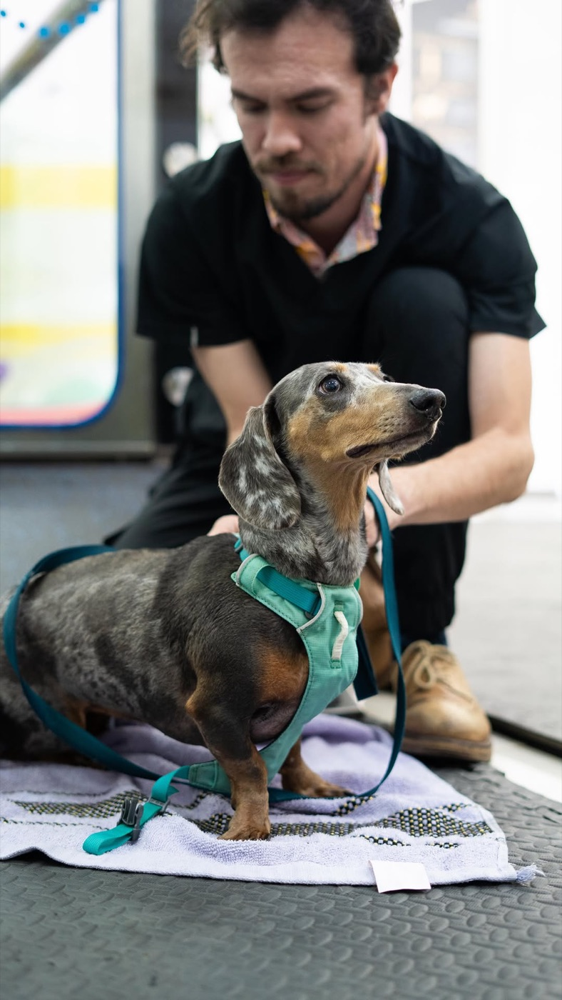
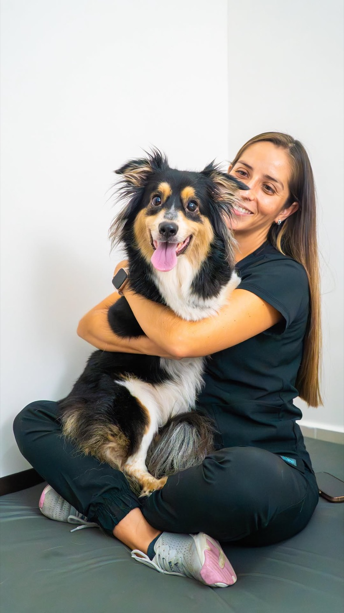

¿Qué hacer si mi perro tiene una hernia discal?
Una hernia sucede cuando el material del núcleo pulposo sale del disco intervertebral y le produce una lesión a la médula. Si tu perrito está con mucho dolor de espalda, camina con pérdida de equilibrio o perdió la movilidad de sus patitas, es importante que lo lleves lo antes posible a un centro médico para realizar los exámenes correspondientes.
Buscá atención de emergencia si aparece cualquiera de estas señales:
- Arrastra las patas traseras y no logra apoyarlas, o no las mueve del todo.
- No reacciona cuando se le pellizca firme un dedo de una pata trasera. Esa pérdida de dolor profundo es el hallazgo más grave.
- Pasó de cojear a no caminar en cuestión de horas.
- Dejó de orinar por su cuenta o la vejiga se siente llena y dura.
- Grita al moverse y no encuentra ninguna postura que lo calme.
- Camina despacio, rígido o con la espalda arqueada.
- Se resiste a subir gradas o a que lo alcen.
- Tiembla o se queja al cargarlo y se calma al quedarse quieto.
- Cojea de una pata delantera y tiene el cuello tieso. Ese es el patrón típico de una hernia en el cuello.
Un perro que hoy solo cojea puede empeorar en 24 horas. Vet Rehab no atiende emergencias. Llevalo a una clínica con cirugía y neurología disponibles, y escribinos después para la etapa de recuperación.
01 Por qué pasa
Por qué les pasa tanto a los salchichas
La hernia discal es de los motivos de consulta más frecuentes, sobre todo en razas condrodistróficas: salchicha, bulldog francés, poodle, corgi, entre otras.
Las razas condrodistróficas son las de patas cortas. Tienen esa forma por una alteración genética del cartílago, y esa misma alteración hace que el centro del disco se endurezca desde temprano. Un disco endurecido deja de amortiguar. Con un salto del sofá, un movimiento brusco o sin causa clara, el material del disco se corre hacia el canal por donde pasa la médula y la comprime.
Pasa también en beagle, shih tzu, pequinés y cocker. La edad más frecuente va de los tres a los siete años, antes de lo que la mayoría de las familias espera.

02 Gravedad
Los grados de una hernia discal
La hernia discal se clasifica por lo que tu perro todavía puede hacer. De ahí sale la decisión entre operar o manejarlo sin cirugía, y también el pronóstico.
-
Grado 1. Solo dolor
Camina normal pero le duele la espalda o el cuello. Se maneja con reposo, analgesia y rehabilitación.
-
Grado 2. Camina con déficit
Se tambalea, cruza las patas o raspa las uñas al caminar. Todavía se sostiene. Es el punto donde la rehabilitación aporta más y donde muchos casos se resuelven sin cirugía.
-
Grado 3. No camina, pero mueve
Las patas traseras se mueven y no lo sostienen. La mayoría se opera. La rehabilitación posterior define cuánto de la marcha regresa.
-
Grado 4. Parálisis con sensibilidad conservada
No mueve las patas pero siente. Cirugía urgente.
-
Grado 5. Sin dolor profundo
No siente el pellizco fuerte en los dedos. El pronóstico cae con cada hora que pasa. La cirugía deja de ser opcional.
La clasificación la hace el médico especialista con el paciente al frente, después de examinarlo.
03 Nuestro trabajo
La rehabilitación en una hernia discal
Entramos en dos momentos. Después de la cirugía que libera la médula, o como manejo sin cirugía en los grados leves cuando el médico especialista lo indica.
El objetivo es el mismo en los dos casos: que el sistema nervioso vuelva a armar el patrón de la caminata antes de que el músculo se pierda del todo. El plan combina modalidades terapéuticas, terapia manual, ejercicio terapéutico y, en Sabana Norte, la hidrocaminadora.

04 Preguntas frecuentes
Hernia discal, dudas comunes
Mi perro arrastra las patas traseras. ¿Se le va a quitar solo?
No. Que arrastre las patas quiere decir que la médula está comprimida, y esa compresión no cede sola. Necesita que un veterinario lo vea hoy mismo para definir el grado y decidir si hay que operar. Si además perdió sensibilidad, cada hora cuenta.
¿Se puede tratar una hernia discal sin cirugía?
En los casos leves sí. Los perros que todavía caminan, aunque sea con dolor o medio descoordinados, suelen manejarse con reposo estricto, analgesia y rehabilitación. La decisión la toma el médico especialista con el examen y las imágenes al frente. Si el paciente empeora durante ese manejo, se vuelve a plantear la cirugía.
¿Cuándo puedo empezar la terapia después de la cirugía?
La terapia se puede iniciar tan pronto como el día después de la cirugía de tu mascota, o en el momento en que le den la salida del hospital.
Agendar cita
Agendá su valoración
Si ya lo operaron, mandanos la fecha de la cirugía y el reporte quirúrgico. Empezamos con la valoración de movilidad y el plan de rehabilitación. Atendemos en Sabana, en Heredia y a domicilio.